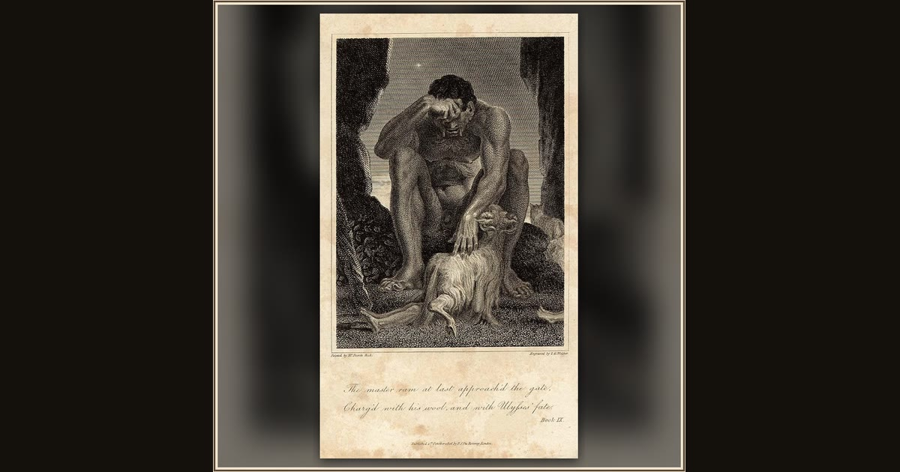

Blinded Polyphemus Checks the Sheep as they leave the Cave
J. G. Walker · 1806 · Wikimedia Commons
The decisive moment is in the title: the blind giant runs his hands over the sheep's backs at the cave mouth - never feeling the men clinging underneath (Od. 9.415-463). Explore its place in Book IX of the Odyssey.